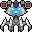
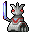
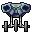
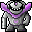
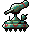
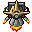
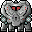

Imp
Swarm Attacker
The lowest creatures in the facility's mutant hierarchy. What they lack in strength they make up for in numbers, swarming through corridors in packs to overwhelm their prey from all sides.
Swarm tactics — tries to surround the player

Guard
Facility Patrol
Former security personnel, now corrupted by the reactor's influence. They still patrol in groups and call for reinforcements when threatened. A balanced combatant with no particular weakness.
Group behavior — calls for help when engaged

Soldier
Tactical Combatant
Elite troops trained in tactical combat. They strafe to avoid fire, retreat when outgunned, and use cover intelligently. Their long detection range makes them hard to sneak past.
Uses cover, strafes, and retreats tactically

Berserker
Enraged Brawler
Hulking mutants driven mad by pain. They charge relentlessly and never flee. When wounded below 40% health, they enter a berserker rage — doubling their damage and surging forward with terrifying speed.
Berserker rage at low HP — 2x damage, 1.6x speed

Spitter
Ranged Support
Mutated facility workers whose bodies now produce corrosive bile. They hang back at extreme range, lobbing toxic projectiles while retreating behind cover if approached.
Fires ranged projectiles — retreats to cover
Phantom
Stealth Assassin
Phase-shifted entities that flicker between dimensions. Nearly invisible when stalking, they only fully materialize in the instant they strike. Listen for the shimmer — by the time you see one, it may already be too late.
Phantom cloak — invisible except when attacking
Exploder
Suicide Bomber
Unstable mutants packed with volatile reactor waste. They sprint toward targets at maximum speed with a single purpose: detonate on contact. Fragile but devastatingly powerful — take them out before they get close.
Self-destructs on contact — highest single-hit damage

Shield Guard
Heavy Defender
Armored enforcers equipped with reactor-forged energy shields. Frontal attacks are nearly useless — their shield absorbs 70% of incoming damage. Flank them or find another way around.
Front shield — 70% damage reduction from the front
Sniper
Long-Range Specialist
Patient hunters perched in elevated positions or dark corners. They can detect targets at extreme range and deliver punishing shots from safety. After firing, they relocate — making them difficult to pin down.
Relocates after firing — longest detection range

Demon
Heavy Brute
Massive beasts of pure aggression, warped beyond recognition by the reactor core. Slow but immensely powerful, they can absorb enormous punishment while closing the distance with devastating charge attacks.
Charge attack — extremely aggressive, never flees
Reactor Overlord
Boss
The apex predator of the reactor facility. This colossal entity fights in three phases, growing more dangerous as it weakens. It summons imp minions to overwhelm you while unleashing devastating charge attacks. Defeating it requires every weapon in your arsenal.
3 boss phases — summons minions, charge attack, never flees